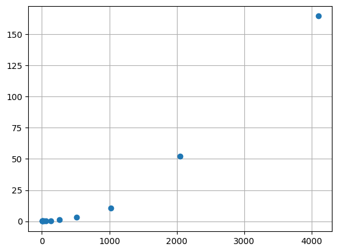

import numpy as np
def remove_i(x, i):
"""Drops the ith element of an array."""
shape = (x.shape[0]-1,) + x.shape[1:]
y = np.empty(shape, dtype=float)
y[:i] = x[:i]
y[i:] = x[i+1:]
return y
def a(i, x, G, m):
"""The acceleration of the ith mass."""
x_i = x[i]
x_j = remove_i(x, i) # don't compute on itself
m_j = remove_i(m, i)
diff = x_j - x_i
mag3 = np.sum(diff**2, axis=1)**1.5
# compute acceleration on ith mass
result = G * np.sum(diff * (m_j / mag3)[:,np.newaxis], axis=0)
return resultIntroduction to parallel computing
Introduction to parallel computing (in Python)
If you want more, check out CS 475/575 Parallel Programming.
Approaching parallelism
- How do I do many things at once?
- How do I do one thing faster?
Computer: perform many simultaneous tasks
Developer: determine dependencies between code and data
Up until now: serial thinking, like “x then y then z”
Benefit of parallelism: problems execute faster—sometimes much faster.
Downside to parallelism: harder to program, debug, open files, print to screen.
Why go parallel?
Important
First: wait until your code works and you need it.
- The problem creates or requires too much data for a normal machine.
- The sun would explode before the computation would finish.
- The algorithm is easy to parallelize.
- The physics itself cannot be simulated at all with smaller resources.
Scale and scalability

Scale and scalability
Scale: size of problem
Scale is proportional to number of processes \(P\) used, and thus the maximum degree of parallelism possible.
FLOPS: number of floating-point operations per second
Scaling up code
Scale up slowly—start with one processor, then 10, 100, etc.
scalability: how easy or hard it is to scale code
Strong scaling
strong scaling: how runtime changes as a function of processor number for a fixed total problem size.
speedup \(s\) ratio of time on one processor (\(t_1\)) to time on \(P\) processors (\(t_P\)):
\[ s(P) = \frac{t_1}{t_P} \]
Strong scaling
Efficient system: linear strong scaling speedup.
For example, PyFR computational fluid dynamics code:

Weak scaling
weak scaling: how runtime changes as a function of processor number for a fixed problem size per processor
sizeup \(z\) for a problem size \(N\):
\[ z(P) = \frac{t_1}{t_P} \times \frac{N_P}{N_1} \]
Weak scaling
Efficient system: linear sizeup. Or, constant time with additional processors/problem size.
For example, PyFR computational fluid dynamics code:

Amdahl’s Law
Some fraction of an algorithm, \(α\), cannot be parallelized.
Then, the maximum speedup/sizeup for \(P\) processors is:
\[ \max( s(P) ) = \frac{1}{\alpha - \frac{1-\alpha}{P}} \]
The theoretically max speedup is:
\[ \max(s) = \frac{1}{\alpha} \]
Types of problems
embarassingly parallel: algorithms with a high degree of independence and little communication between parts
Examples: summing large arrays, matrix multiplication, Monte Carlo simulations, some optimization approaches (e.g., stochastic and genetic algorithms)
Other algorithms have unavoidable bottlenecks: inverting a matrix, ODE integration, etc.
Not all hope is lost! Some parts may still benefit from parallelization.
Example: N-body problem
Generalization of the classic two-body problem that governs the equations of motion for two masses. From Newton’s law of gravity:
\[ \frac{dp}{dt} = G \frac{m_1 m_2}{r^2} \]
Equations of motion
\[ \begin{align} \mathbf{x}_{i,s} &= G \sum_{j=1, i \neq j} \frac{m_j (\mathbf{x}_{j,s-1} - \mathbf{x}_{i,s-1})}{||\mathbf{x}_{j,s-1} - \mathbf{x}_{i,s-1}||^3} \Delta t^2 + \mathbf{v}_{i,s-1} \Delta t + \mathbf{x}_{i,s-1} \\ \mathbf{v}_{i,s} &= G \sum_{j=1, i \neq j} \frac{m_j (\mathbf{x}_{j,s-1} - \mathbf{x}_{i,s-1})}{||\mathbf{x}_{j,s-1} - \mathbf{x}_{i,s-1}||^3} \Delta t + \mathbf{v}_{i,s-1} \end{align} \]
No parallelism
def timestep(x0, v0, G, m, dt):
"""Computes the next position and velocity for all masses given
initial conditions and a time step size.
"""
N = len(x0)
x1 = np.empty(x0.shape, dtype=float)
v1 = np.empty(v0.shape, dtype=float)
for i in range(N): # update locations for all masses each step
a_i0 = a(i, x0, G, m)
v1[i] = a_i0 * dt + v0[i]
x1[i] = a_i0 * dt**2 + v0[i] * dt + x0[i]
return x1, v1
def initial_cond(N, D):
"""Generates initial conditions for N unity masses at rest
starting at random positions in D-dimensional space.
"""
x0 = np.random.rand(N, D) # use random initial locations
v0 = np.zeros((N, D), dtype=float)
m = np.ones(N, dtype=float)
return x0, v0, mGenerating initial conditions and taking one timestep:
x0, v0, m = initial_cond(10, 2)
x1, v1 = timestep(x0, v0, 1.0, m, 1.0e-3)Driver function that simulates \(S\) time steps:
def simulate(N, D, S, G, dt):
x0, v0, m = initial_cond(N, D)
for s in range(S):
x1, v1 = timestep(x0, v0, G, m, dt)
x0, v0 = x1, v1Measuring performance
import time
Ns = [2, 4, 8, 16, 32, 64, 128, 256, 512, 1024, 2048, 4096]
runtimes = []
for N in Ns:
start = time.time()
simulate(N, 3, 300, 1.0, 1e-3)
stop = time.time()
runtimes.append(stop - start)import matplotlib.pyplot as plt
plt.plot(Ns, runtimes, 'o')
plt.grid(True)
plt.show()
Does the problem scale quadratically?
Threads
- Threads perform work and are not blocked by work of other threads.
- Threads can communicate with each other through state
Threads: probably don’t use in Python.
- All threads execute in the same process as Python itself.
- Where to use? If you have high latency tasks where you can use spare time for another task (e.g., downloading a large file)